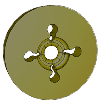

Interfaces | Services | Mesh Geometry | Mesh Curving | Mesh Smoothing | Mesh Swapping | Adaptive Loops | Front Tracking | Dynamic Services | Search and Sort | Visit Plugins | iMeshIO | IPComMan | Mesh Adapt Service | Petascale Meshing | Shape Optimization | AMR Front Tracking | Solution Transfer
Adaptive and multi-physics applications both require the transfer of solution data from one mesh to another. This can be either local or global in nature and must be supported on petascale computers.
There are several ITAPS institutions developing functionality for various parts of this problem. For adaptive simulations, we provide field transfer services during the execution of individual refinement, collapse, and swap operations. The solution transfer during interior refinement maintains the field exactly, while the solution transfer during collapse or swap is limited to only those elements in the small cavity involved in the operation making it more effective to apply alternative projection and/or conservation methods. For multi-physics applications, we provide solution transfers globally between distinct meshes. This process requires the evaluation of field variables at particular target locations based on data associated with the donor or source mesh. For each target location, the solution transfer process must (i) identify the mesh entities in the donor mesh from which data is required; (ii) determine the local coordinates of the target point on the donor mesh entities; and (iii) evaluate the required field components on the donor mesh at that location. We have implemented solution transfer based on a variety of local interpolation basis functions, including linear, spherical harmonics, and higher-order spectral basis functions. These methods are used in various applications, including climate modeling and multi-physics nuclear reactor simulation, use the data sorting and searching component services, and provide an important use case for development of the iField interface.
Future efforts will consider methods to satisfy conservation constraints, over cavities in incremental solution transfer during parallel mesh adaptation and at the end of a global solution transfer step during multi-physics simulations. Considering a variety of shape functions in these diverse efforts will help guide discussions on the iField interface and will provide a focal point for prototype implementations.